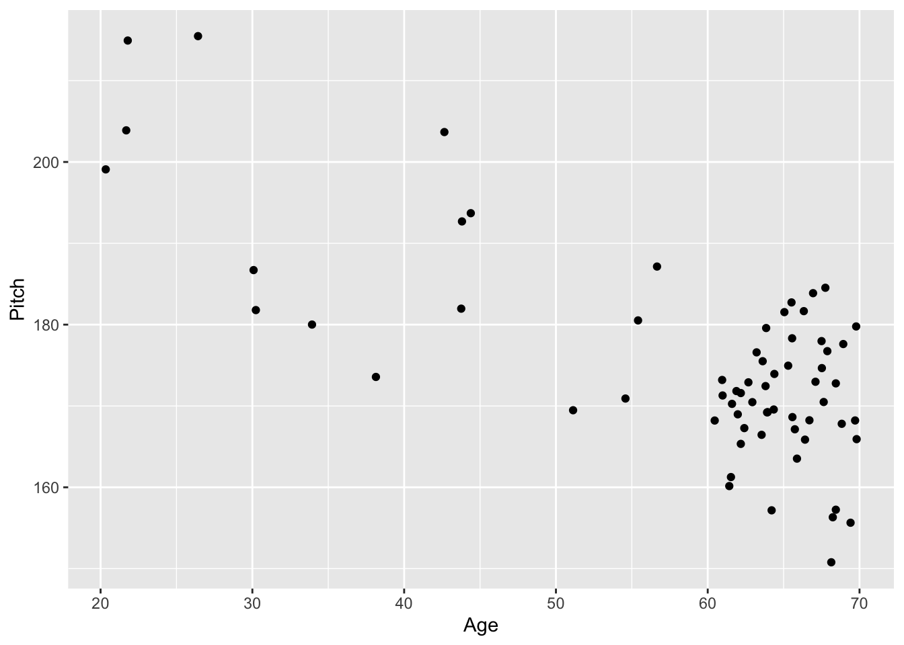
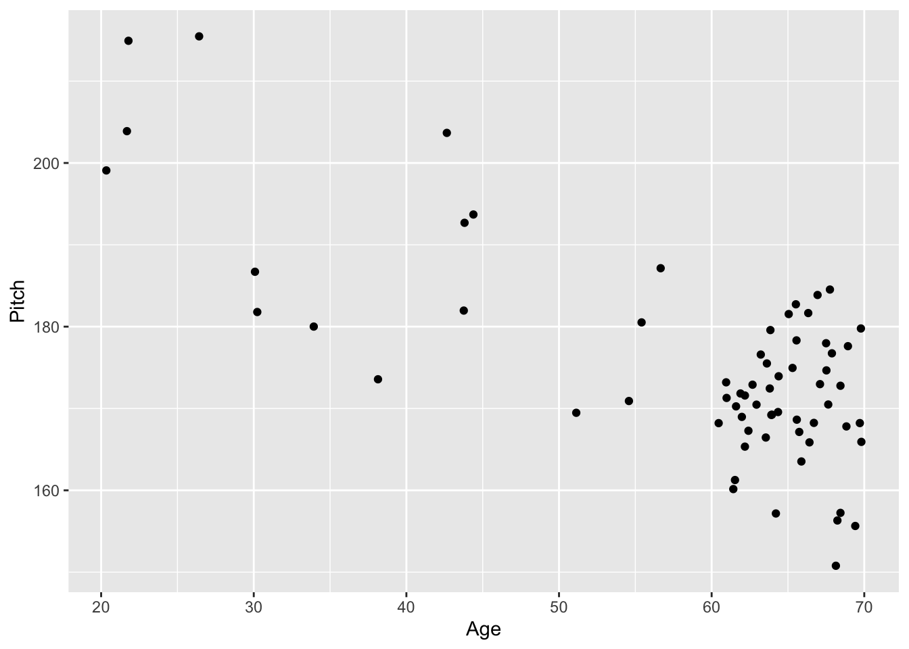
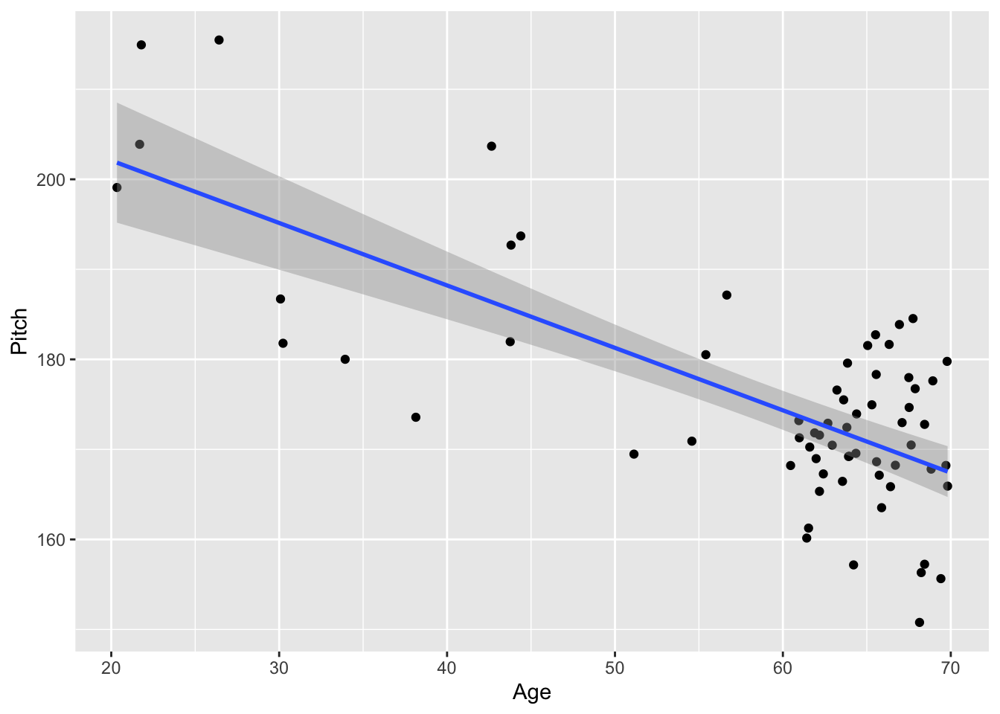
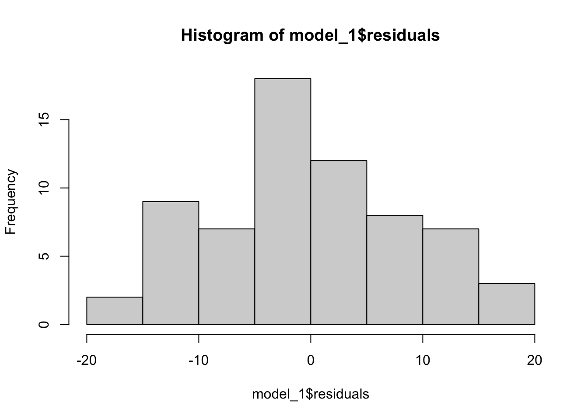
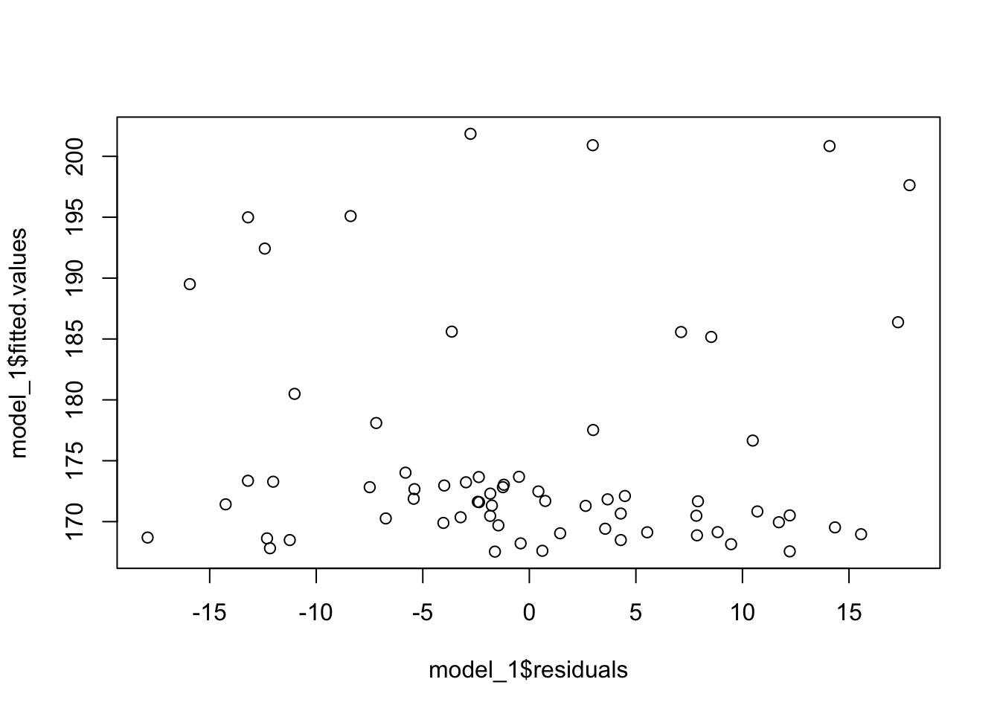
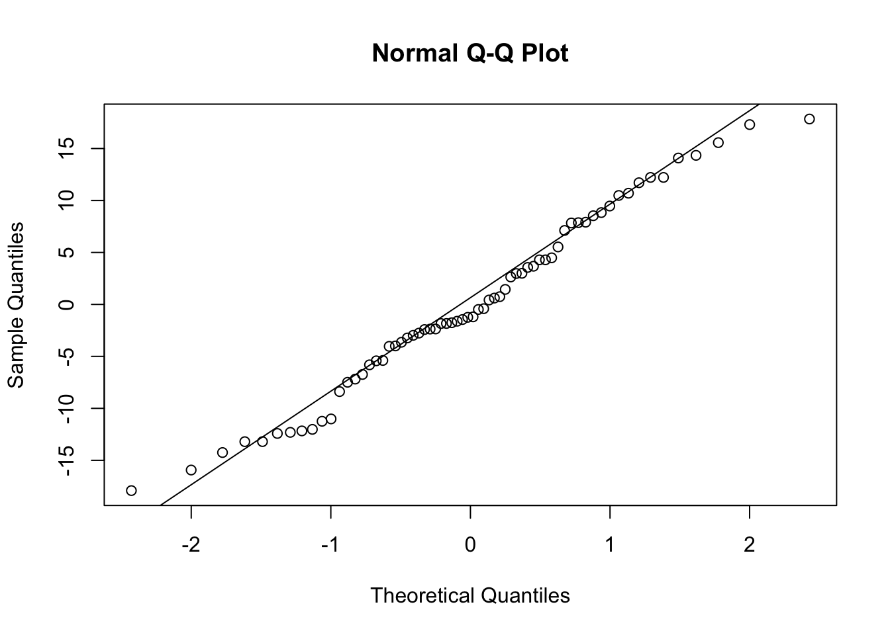

ggplot(data = age_pitch, aes(x=age, y=pitch)) +
geom_point() +
labs(x = "Age", y = "Pitch")
You must answer ALL questions and follow ALL steps in the homework instructions!
In the first set of exercises, we will use a dataset that looks at the relation between age and pitch perception (in Hz; the ability to distinguish between sounds based on their pitch). You will build a linear model and answer this question: Does pitch perception change as we age?
Read in the data using the read_csv() function. Name the data “age_pitch”
Make a scatter plot of the relation between age (x-axis) and pitch (y-axis).
Run a correlation test between age and pitch using the corr.test() function.
Answer the following questions:
Provide an APA-style summary of your results.
ggplot(data = age_pitch, aes(x=age, y=pitch)) +
geom_point() +
labs(x = "Age", y = "Pitch")
Create a new plot, adding a regression line to your scatter plot of the relationship between age (x-axis) and pitch (y-axis).
Perform a linear regression analysis using the lm() function. Recall the form of regression equations is: model <- lm(y ~ x, data = df).
Answer the following questions:
Create a table of your regression results.
Provide an APA-style summary of your results (make sure it follow the example summary from the lab).
ggplot(data = age_pitch, aes(x=age, y=pitch)) +
geom_point() +
geom_smooth(method="lm") +
labs(x = "Age", y = "Pitch")`geom_smooth()` using formula = 'y ~ x'
model_1 <- lm(pitch ~ age, data = age_pitch)
summary(model_1)
Call:
lm(formula = pitch ~ age, data = age_pitch)
Residuals:
Min 1Q Median 3Q Max
-17.913 -5.418 -1.219 6.722 17.840
Coefficients:
Estimate Std. Error t value Pr(>|t|)
(Intercept) 215.95815 4.94975 43.630 < 2e-16 ***
age -0.69363 0.08222 -8.436 5.5e-12 ***
---
Signif. codes: 0 '***' 0.001 '**' 0.01 '*' 0.05 '.' 0.1 ' ' 1
Residual standard error: 8.785 on 64 degrees of freedom
Multiple R-squared: 0.5265, Adjusted R-squared: 0.5191
F-statistic: 71.17 on 1 and 64 DF, p-value: 5.504e-12Create a histogram of the residuals from your regression (make sure you are plotting the residuals, see the lab for information about how to pull these values out of the model).
Next, create a scatter plot with the residuals on the X axis and the predicted values on the Y axis (see homework instructions for code!).
Finally, create a Q-Q plot of the residuals using the qqline() function in R.
Answer the following questions:
Note: If you detect violations you do not need to do anything to fix them.
hist(model_1$residuals)
plot(model_1$residuals, model_1$fitted.values)
qqnorm(model_1$residuals)
qqline(model_1$residuals)
Choose a Tidy Tuesday dataset (see Homwork Instructions for details).
Make a scatter plot of the relation between the two variables you chose.
Run a correlation test between age and pitch using the corr.test() function.
Answer the following questions:
Provide an APA-style summary of your results.
Create a new plot, adding a regression line to your scatter plot of the relation between your two variables.
Perform a linear regression analysis using the lm() function. Recall the form of regression equations is: model <- lm(y ~ x, data = df).
Answer the following questions:
Create a table of your regression results.
Provide an APA-style summary of your results (make sure it follow the example summary from the lab).
First, create a histogram of the residuals from your regression (make sure you are plotting the residuals, see the lab for information about how to pull these values out of the model).
Next, create a scatter plot with the residuals on the X axis and the predicted values on the Y axis.
Finally, create a Q-Q plot of the residuals using the qqline() function in R.
Answer the following questions:
Note: If you detect violations you do not need to do anything to fix them.